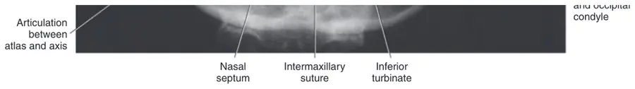
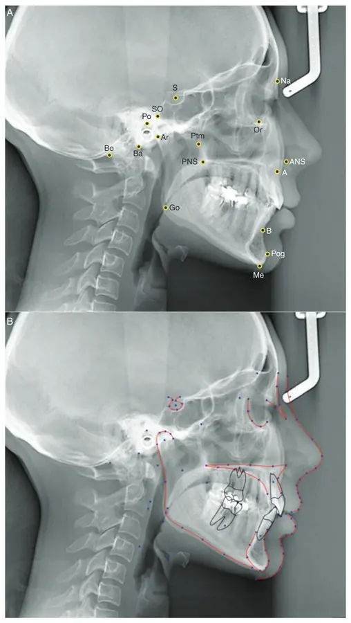

نسخه استخراجشده؛ ترجمه یا تأیید علمی انجام نشده است. وضعیت: captured
پروجکشن PA «در زاویهی قائم نسبت به پروجکشن لترال» ساخته میشود. و منطقش زیباست: «اطلاعات ترکیبی سفالوگرام لترال و PA، ارزیابی اسکلت کرانیوفاسیال را در هر سه بُعد ممکن میکند.»

چهار اندیکاسیون: ارزیابی آسیمتری کرانیوفاسیال، ارزیابی رابطهی ماگزیلومندیبولار در ابعاد مدیولترال و عمودی، پایش پیشرفت درمان، پایش نتایج درمان.
وضعیتدهی: میلههای گوشی محکم در مجرای شنوایی خارجی و بیمار رو به گیرنده — «قرار دادن ساختارهای صورت نزدیکتر به گیرنده، بزرگنماییشان را کمینه میکند». صفحهی ساژیتال میانی عمودی و عمود بر گیرنده؛ صفحهی فرانکفورت افقی و عمود بر گیرنده.
پرتو مرکزی: «عمود بر گیرنده، هدایتشده از خلف به قدام (از همینجا نام PA)، از میان صفحهی ساژیتال میانی، و مرکز شده در سطح مئاتوس شنوایی خارجی.»
و یک معیار کنترل کیفی که باید حفظ کنی: «وقتی صفحهی فرانکفورت افقی همراستا شده باشد، مرز فوقانی ریج پتروس باید روی یکسوم تحتانی اربیت پروجکت شود.» اگر چنین نبود، وضعیتدهی نادرست بوده است.
و ویژگی تصویر: «ساختارهای قدامی مورد نظر — اسکلت میدفاسیال و مندیبل — نزدیکتر به گیرنده و کمتر از ساختارهای خلفیتر بزرگنمایی میشوند.» و «صفحهی ساژیتال میانی عمودی پروجکت میشود و نیمههای راست و چپ را جدا میکند تا کشف آسیمتری آسان شود».
و ارزیابی نظاممند PA — شش ناحیه: کالواریوم (کانتور، سوچور، شیار عروقی، کلسیفیکاسیون داخلجمجمهای)، قاعدهی جمجمه (سلولهای ماستوئید، کانتور کورتیکال اسفنوئید و سقف اربیت)، سینوسهای پارانازال (سینوس اسفنوئید با سوپرایمپوزیشن پوشیده میشود؛ اتموئید، فرونتال و ماگزیلاری شناسایی میشوند)، صورت فوقانی و میانی (تقارن اربیتها، زوائد زیگوماتیک، حفرهی بینی)، صورت تحتانی (کانتور مندیبل از کندیل تا کندیل مقابل، تقارن، و رابطه با خط وسط ماگزیلا)، استخوان آلوئولار و دندانها.
و یک نکتهی بالینی مهم در بخش دندانها: «دندانهای قدامی روی ستون فقرات گردنی سوپرایمپوز میشوند. دندانهای خلفی، بهویژه مولرهای سوم مندیبل، بهتر دیده میشوند. پاتولوژیهای مرتبط با مولرهای سوم، مانند کیست دنتیژروس، شایعاند؛ پس دندانهای تاحدی تکاملیافته و نروییده باید با جزئیات ارزیابی شوند.»
لندمارکهای سفالومتریک — تعریف دقیق هرکدام:

و منطق آنالیز — دو حالت مقایسه که نباید در هم بیامیزند:
و همین حالت دوم است که «فاصلهی جسم تا گیرنده باید ثابت بماند» را الزامی میکند. بدون هندسهی یکسان، مقایسه بیمعناست.
و تحول ابزار: آنالیزها ابتدا با «علامتگذاری و ترسیم دستی لندمارکها روی کاغذ استات» روی نگاتوسکوپ انجام میشدند. سپس نرمافزارهای رایانهای «شناسایی خودکار لندمارک را فراهم کردند و زمان پرسنل را کاهش دادند». و امروز «برنامههای مبتنی بر هوش افزوده برای آنالیز کاملاً خودکار» موجودند که «میتوانند لندمارکها را شناسایی و ترسیم و آنالیز دوبعدی را در چند دقیقه انجام دهند».
و سن استخوانی از رادیوگرافی مچ دست: سن اسکلتی سنجهی بلوغ زیستی کودک در حال رشد است و از سن تقویمی، قد، تکامل و رویش دندانی و نشانگرهای بلوغ جنسی قابل اعتمادتر است. تکنیک: دست چپ صاف روی گیرنده، انگشتان جدا و شست دور از کف تا سزاموئید دیده شود؛ پرتو عمود بر گیرنده، از سطح پشتی به کفی و مرکز روی متاکارپ سوم. تصویر با استانداردهای Greulich–Pyle و Tanner–Whitehouse مقایسه میشود. توالی عملی: آغاز جهش رشد با همعرض شدن و سپس پوشاندن دیافیز توسط اپیفیز، اوج با پیدا شدن سزاموئید انگشت اول، و پایان با جوش خوردن فالانژها و سرانجام رادیوس. این روشها عمدتاً در جمعیتهای سفیدپوست ساخته شدهاند و در جمعیتهای دیگر باید با احتیاط به کار روند.